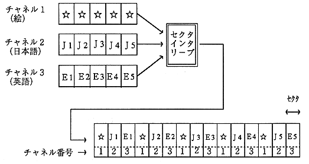

The channel number is used to identify sectors belonging to one channel in the file.

(3) Sub mode
The sub mode is used for sector allocation, file and record termination, and synchronization in the system.
The configuration of the submode byte is shown in Table 2.4.
Table 2.4 Bit configuration of sub mode
bit number |
bit name |
Default value |
7 |
End Of File(EOF) |
0 |
End Of File (EOF): Only the last sector of the file is set to 1. Other sectors will be 0. Real Time Sector (RT): When this bit is 1, the real-time processing of CD-ROM XA is interrupted. It must be processed without. Form (F): Indicates that it is recorded in Form1 when 0, and Form2 when 1. Trigger (T): This bit is used for applications with various coding information. Used for synchronization in